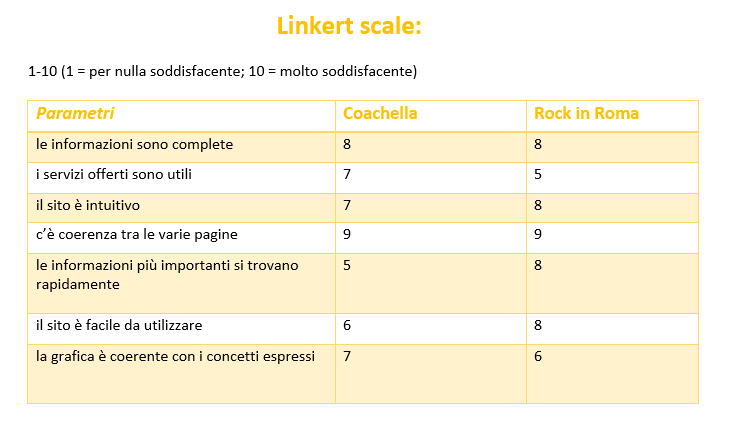

Abstract
Sunset Beach Festival nasce dall'idea di due giovani ragazze (Alice & Alice) di unire le loro due più grandi passioni: la musica e i tramonti sul mare. Sunset Beach Festival è un evento musicale
nella riviera romagnola, che ospita alcuni tra i dj, cantanti e artisti più famosi del momento.
Il festival si propone di fornire un'esperienza unica e irripetibile per arricchire l’estate, combinando la bellezza dell’atmosfera estiva in spiaggia e l'eccellenza musicale degli artisti più noti.
Il nostro obiettivo è quello di tenere aggiornati gli utenti su questo fantastico festival e agevolare il più possibile l’esperienza
fornendo inoltre diversi servizi: l’acquisto immediato dei biglietti, una navetta su prenotazione per chi arriva alla stazione di Ravenna, un’area ristoro e il merchandising ufficiale del festival.
Project Managment Plan
Benchmarking
- Obiettivi: il nostro obiettivo è quello di mostrare al meglio il Sunset Beach Festival invogliando più persone a partecipare.
Tramite il nostro sito forniamo diversi servizi per incoraggiare e agevolare la partecipazione al festival.
- Ci rivolgiamo a un target di utenti prevalentemente giovane (15-35 anni) che non vede lora di arricchire la sua estate con una bella giornata in spiaggia tra musica, concerti e sole.
- Competitors: i concorrenti che abbiamo analizzato sono Coachella e Rock in Roma.
Il Coachella è un festival musicale internazionale che si tiene ogni anno verso fine aprile nel deserto della California, si tratta quindi di un evento estivo famoso in tutto il mondo che accoglie un target molto ampio.
Il rock in Roma invece è un festival conosciuto soprattutto in Italia e che quindi si focalizza su artisti e utenti italiani.
Entrambi i siti mettono in primo piano gli ospiti informando subito gli utenti sulle scalette, i biglietti e le date. Il coachella si propone come più allegro e colorato ricordando il luogo del festival che è molto suggestivo immerso nel caldo deserto californiano.
Al contrario il rock in Roma ha una grafica molto scura e di impatto.
Per la scelta dei competitors abbiamo analizzato i dati forniti al sito Similarweb:
Rock in Roma, Coachella

Struttura e layout
1.Architettura del sito:
2.Wireframe:


3.Look and Feel:
Il sito ha un'impostazione colorata e allegra, è ricco di immagini e continui rimandi ai temi principali del festival: la musica e la spiaggia. I colori principali sono infatti arancione, azzurro e bianco che ricordano il sole e il mare e perciò ritornano spesso nelle grafiche (come il logo), nei titoli, nei bottoni e nelle barre di navigazione. Il font Statisfay è utilizzato per i titoli e la barra di navigazione per conferire un senso di allegria e continuità al sito. Il logo è stato realizzato con Canva in modo minimale per conferire un'identità riconoscibile all'evento e quindi al sito. Sono presenti i 3 elementi grafici significativi e di rimando al nome del fesival: il sole, il mare e le frequenze musicali.
Linguaggi e strumenti
Linguaggi: HTML e CSS
Strumenti: Google Fonts (per i font), Bootstrap, Github (per la pubblicazione), Google Analytics (per la valutazione dei riusltati), Canva (per il logo, il merchandising e le immagini)
Comunication strategy
1. Background
Per quanto riguarda il sito del Coachella è stato ripreso l’impatto grafico che trasmette le giuste sensazioni associate ad un festival estivo (colori e font allegri, immagini del luogo, fotografie).
Essendo a tratti dispersivo su quelle che invece sono informazioni fondamentali, come ad esempio l’acquisto delle diverse tipologie di pass per l’accesso al festival, è stato deciso di non riprendere la struttura del sito. Al contrario, è stato scelto di dare priorità alle infromazioni più rilevanti (le date e gli orari del festival).
Il sito del Rock in Roma mette molto in evidenza gli artisti e le loro rispettive date, le scritte sono di impatto.
Il font è decisamente più rigido rispetto a quello utilizzato sul sito del Coachella. La struttura del sito fornisce molti punti di accesso alle informazioni sul luogo dell’evento e diverse indicazioni su come raggiungerlo che pero non sono direttamente fornite dall’organizzatore del Rock in Roma.
2. Obiettivi comunicativi
L’obiettivo principale è quello di farci conoscere il più possibile e raggiungere gli utenti giusti. Inoltre, vogliamo offrire l’opportunità di godere di un’esperienza diversa dal solito: un festival in spiaggia.
In particolare, gli obiettivi di comunicazione web sono:
- 70 visite al sito
- 30 like ad un post di Instagram della pagina
- 50 visualizzazioni ad una storia su Instagram della pagina che sponsorizza il sito
3. Target audience e messaggio
Con questo sito vogliamo rivolgerci e raggiungere un target giovane italiano, nello specifico di under 35 (come quello dei nostri competitors) che è quello che popola maggiormente le zone della riviera romagnola con locali o altre occasioni di divertimento, ed è quindi in cerca di un’esperienza come un festival musicale in spiaggia.
Di solito questo target viene raggiunto principalmente tramite profili sui social network, il passaparola, produzioni grafiche accattivanti, colori allegri, immagini, loghi riconoscibili e un’identità facilmente individuabile per l’evento. Per quanto riguarda il messaggio del sito, quello che ci interessa trasmettere è la chiarezza e la facilità di comprensione delle informazioni relative all’organizzazione e lo svolgimento del festival.
Quindi, una volta raggiunto il messaggio, è importante che gli utenti visualizzino e comprendano le pagine relative alle informazioni essenziali e in seguito, se interessati, acquistino i biglietti per partecipare all’evento o uno dei nostri servizi aggiuntivi.
4.Promozione
Il target a cui ci rivolgiamo viene raggiunto principalmente tramite i social, in particolare Instagram che si rivolge maggiormente alla fascia under 35,
perciò focalizziamo la nostra presenza lì e creiamo numerosi collegamenti diretti con il nostro sito tramite post, storie e reel in cui è presente l'URL del sito.
Per quanto riguarda l’aspetto pubblicitario verranno utilizzati anche dei volantini con il codice QR della pagina appesi nei maggiori luoghi di ritrovo del nostro target.
Inoltre tramite whatsapp sarà possibile condividiere il link diretto al nostro sito per un maggiore passaparola tra gruppi di amici che intendono partecipare al festival.
Per promuovere un festival in spiaggia sono utili anche promoter dal vivo sul luogo dell’evento e dintorni oppure una partecipazione del comune di Ravenna e della pro loco di Marina di Ravenna per la sponsorizzazione dell’evento.
Un altro mezzo di promozione potrebbe essere la radio in quanto principale veicolo di musica e quindi strettamente correlato col tema del nostro festival.
5.Valutazione dei risultati
Per quanto riguarda Instagram, abbiamo utilizzato la funzione "insights" per monitorare le statistiche della nostra pagina.
Questi dati ci hanno permesso di valutare l'efficacia della nostra strategia comunicativa.
Complessivamemnte, l'utilizzo di queste statistiche e di Google Analytics ci ha consentito di ottenere una
panoramica completa delle prestazioni del nostro sito web e della nostra presenza su Instagram, raggiungendo gli obiettvi che ci eravamo prefissate.